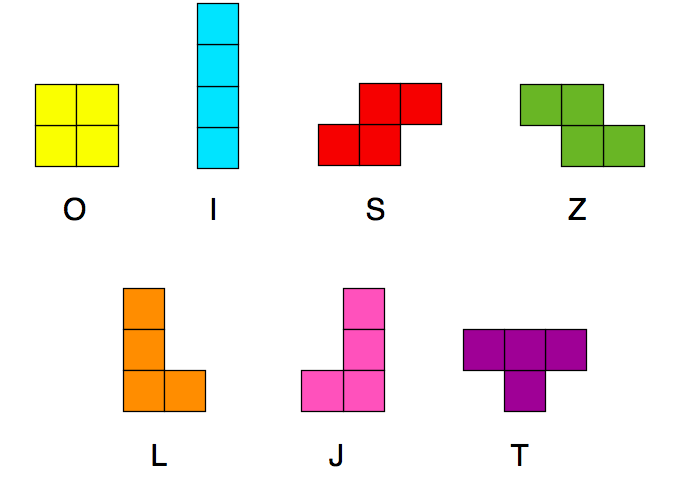

Tetris
Tetris like implementation made in Defold for computer
The Project
A while ago a friend told me I should start programming in Lua. At the time I didn't think much about it, but later I decided to try.
This is my first Lua game implementation in Defold. I thank the community for helping me with my doubts, because, man, they are fast.
The Game
First, lets get straight to the results. If you feel like it, give it a try
Introduction
I think the most important thing before coding is to know what you are supposed to make. So let's understand a bit more about tetris.
The action of Tetris happens within a machine called a tetrion.
The largest part of the tetrion consists of the playfield measuring ten spaces across by twenty spaces down.
Randomly selected tetrominoes, or shapes consisting of four square blocks, fall from the top of the playfield one at a time. Each tetromino enters the playfield with a given orientation and color depending on its shape. Part of the tetrion, called the piece preview, shows the next pieces that will enter the playfield.
The player can rotate the falling tetromino ninety degrees at a time within the plane of the playfield by pressing the counterclockwise or clockwise rotation buttons, provided the piece has room to rotate. Some versions of the game nudge the tetromino away from the wall or other blocks in order to make room.
The player can shift the falling tetromino sideways one space at a time by pressing the left or right arrow or holding it for quicker movement, provided the piece has room to move. Pieces cannot shift through walls or other blocks.
Each tetromino moves downward slowly by itself. Generally a player can use some method to "drop" the tetromino, or make it move downward faster. Once the tetromino lands on the floor or other blocks, the piece will delay shortly before locking in which time the player can move it. After locking, a player can no longer move the tetromino.
When a tetromino locks and by doing so fills all empty spaces within one or more rows of the playfield, those full rows will clear. Remaining blocks above will move down by as many rows removed.
If the playfield has not filled up with blocks, the next piece enters.
Creating the playfield
Instead of making a 20x10 grid will be making a 22x10 one, for no special reason
I created a tilesource called layout. Each tile is the color of one of the shapes. The tilesource was made by loading an image made of 25 x 25 pixels I've made.
Using said the gray tile I drawed the game_grid, a layer of the Tile Map. It's important to remember setting z to -1 to make sure the playfield will stay behind the pieces.
If you tried to play the game in The Game. You've seen the resulting grid.
-- Initialize the game (at startup or after game over).
local function reinitialize(self)
msg.post(".", "acquire_input_focus")
msg.post("/gui#gameover", "disable")
self.grid = {
{ 1, 1, 1, 1, 1, 1, 1, 1, 1, 1, 1, 1, 1, 1, 1, 1, 1, 1, 1, 1, 1, 1 },
{ 1, 1, 1, 1, 1, 1, 1, 1, 1, 1, 1, 1, 1, 1, 1, 1, 1, 1, 1, 1, 1, 1 },
{ 1, 1, 1, 1, 1, 1, 1, 1, 1, 1, 1, 1, 1, 1, 1, 1, 1, 1, 1, 1, 1, 1 },
{ 1, 1, 1, 1, 1, 1, 1, 1, 1, 1, 1, 1, 1, 1, 1, 1, 1, 1, 1, 1, 1, 1 },
{ 1, 1, 1, 1, 1, 1, 1, 1, 1, 1, 1, 1, 1, 1, 1, 1, 1, 1, 1, 1, 1, 1 },
{ 1, 1, 1, 1, 1, 1, 1, 1, 1, 1, 1, 1, 1, 1, 1, 1, 1, 1, 1, 1, 1, 1 },
{ 1, 1, 1, 1, 1, 1, 1, 1, 1, 1, 1, 1, 1, 1, 1, 1, 1, 1, 1, 1, 1, 1 },
{ 1, 1, 1, 1, 1, 1, 1, 1, 1, 1, 1, 1, 1, 1, 1, 1, 1, 1, 1, 1, 1, 1 },
{ 1, 1, 1, 1, 1, 1, 1, 1, 1, 1, 1, 1, 1, 1, 1, 1, 1, 1, 1, 1, 1, 1 },
{ 1, 1, 1, 1, 1, 1, 1, 1, 1, 1, 1, 1, 1, 1, 1, 1, 1, 1, 1, 1, 1, 1 }
}
for x = 1,10 do
for y = 1,22 do
tilemap.set_tile("/grid#grid", "game_grid", x, y, 1)
end
end
math.randomseed(os.time())
math.random(); math.random(); math.random() -- make it more random
create_block(self)
end
Creating the Tetrominoes
Now that we've made the playfield. Let's make the pieces.
First we create a lua table called block in which the information needed about the tetrominoes will be stored. There are 7 possible pieces
Each piece has it's color and will be made of one of the tiles in the tilesource used to make the grid. The tiles in the tilesource are indexed according to their position. We'll use that in our definition of the pieces.
Let's say I want the I piece to be created using the second tile in the tilesource, so I'll say that the block number for the I piece will be 2. Also, I always want the pieces to be initialized in the top center of thee grid. That being said, we know what each piece coordinates are gonna be at the begging, so we set that in the block coords.
To pick a piece we'll pick a random number between 2 and 8 (the position of the tiles that will be used in the tilemap). But since we have to show the user the preview of the next block, we'll have to pick that one too, the same way and make sure that the displayed block in the preview will be the created block in the next round.
self.block = {}
if self.next_block == nil then
self.block.number = math.random(2, 8)
else
self.block.number = self.next_block
end
if self.block.number == 2 then
-- OOOO
self.block.coords = {
{ x = 4, y = 22 },
{ x = 5, y = 22 },
{ x = 6, y = 22 },
{ x = 7, y = 22 }
}
elseif self.block.number == 3 then
-- OO
-- OO
self.block.coords = {
{ x = 5, y = 22 },
{ x = 6, y = 22 },
{ x = 5, y = 21 },
{ x = 6, y = 21 }
}
elseif self.block.number == 4 then
-- OOO
-- O
self.block.coords = {
{ x = 5, y = 22 },
{ x = 6, y = 22 },
{ x = 7, y = 22 },
{ x = 6, y = 21 }
}
elseif self.block.number == 5 then
-- OO
-- OO
self.block.coords = {
{ x = 6, y = 22 },
{ x = 7, y = 22 },
{ x = 5, y = 21 },
{ x = 6, y = 21 }
}
elseif self.block.number == 6 then
-- OO
-- OO
self.block.coords = {
{ x = 5, y = 22 },
{ x = 6, y = 22 },
{ x = 6, y = 21 },
{ x = 7, y = 21 }
}
elseif self.block.number == 7 then
-- O
-- OOO
self.block.coords = {
{ x = 5, y = 22 },
{ x = 5, y = 21 },
{ x = 6, y = 21 },
{ x = 7, y = 21 }
}
elseif self.block.number == 8 then
-- O
-- OOO
self.block.coords = {
{ x = 7, y = 22 },
{ x = 5, y = 21 },
{ x = 6, y = 21 },
{ x = 7, y = 21 }
}
end
self.next_block = math.random(2, 8)
So far we've defined the pieces, but there's still the need to draw them. To do that we'll use Defold's tilemap functions
For each part of the grid that make the piece created, we'll use the tile defined in the variable block
for i,v in ipairs(self.block.coords) do
if v.y < 22 then
tilemap.set_tile("/grid#grid", "game_grid", v.x, v.y + 1, self.block.number)
end
end
Rotating the pieces
To make the game playable using only the arrow keys, we'll be setting only one kind of rotation to the pieces.
The tetrominoes should rotate around their center, so, to make sure that will happen, we define the center of each piece. After that, to make the rotation, we'll use the center's position to define the extremities.
local function rotate(self)
if self.block.number == 3 then -- O block
return true
end
local nextcoords = {}
local center = nil
if self.block.number == 2 or self.block.number == 4 or self.block.number == 6 then
center = self.block.coords[2]
elseif self.block.number == 5 then
center = self.block.coords[1]
elseif self.block.number == 7 or self.block.number == 8 then
center = self.block.coords[3]
end
for i,v in ipairs(self.block.coords) do
local point = { x = center.x + center.y - v.y, y = center.y + v.x - center.x }
if point.x < 1 or point.x > 10 or point.y < 1 or point.y > 24 then
return false
end
if self.grid[point.x][point.y] ~= 1 then
return false
end
table.insert(nextcoords, point)
end
repaint(self.block, nextcoords)
return true
end
Controlling the pieces
When the user press one of the arrow keys, we want one of the following to happen:
- up - The piece rotates
- left - The piece moves to the left
- right - The piece moves to the right
- down - The piece falls faster
There's also the special case of the space key, which, when pressed makes the piece instantly fall to the bottom.
The function to make the rotation is already defined, so we can simply call that if the up arrow key is pressed. What about the down arrow key ?
As the piece moves down we need to check if there's a block or if piece reached the floor, in which cases, we need to send another piece (or tetromino). If neither of those happened, then, we just need to adjust the y position of the piece.
local function move_down(self)
local nextcoords = {}
for i,v in ipairs(self.block.coords) do
if v.y == 1 then
-- Reached floor.
next_block(self)
return false
end
local number = self.grid[v.x][v.y - 1]
if number ~= 1 then
-- Reached an existing block.
next_block(self)
return false
end
table.insert(nextcoords, { x = v.x, y = v.y - 1 })
end
repaint(self.block, nextcoords)
return true
end
If we want to move left or right, we just need to check if will still be inside the playfield after the movement, in which case we'll just adjust the x position of the piece, otherwise, we reject the action and nothing happen.
For the space key we must make the same checks as for the down arrow key, so we can use the same function, as long as the result is fast enough.
function on_input(self, action_id, action)
if action_id == hash("up") and (action.pressed or action.repeated) then
rotate(self)
elseif action_id == hash("down") and (action.pressed or action.repeated) then
move_down(self)
elseif action_id == hash("left") and (action.pressed or action.repeated) then
local nextcoords = {}
for i,v in ipairs(self.block.coords) do
if v.x == 1 then
return
end
if self.grid[v.x - 1][v.y] ~= 1 then
return
end
table.insert(nextcoords, { x = v.x - 1, y = v.y } )
end
repaint(self.block, nextcoords)
elseif action_id == hash("right") and (action.pressed or action.repeated) then
local nextcoords = {}
for i,v in ipairs(self.block.coords) do
if v.x == 10 then
return
end
if self.grid[v.x + 1][v.y] ~= 1 then
return
end
table.insert(nextcoords, { x = v.x + 1, y = v.y } )
end
repaint(self.block, nextcoords)
elseif action_id == hash("space") and action.pressed then
while move_down(self) do
end
end
end
There's also the fact that the tetromino should ove downward by itself as time passes. For that we can use the update function from Defold.
function update(self, dt)
self.t = self.t + dt
if self.t > 1 / self.speed then
move_down(self)
self.t = 0
end
end
Checking lines
Each time a piece reach the floor or another piece we must check if all empty spaces in a row are filled, in which the case the row must be erased and the rows above will be moved down by as many rows were removed. Then, a new piece enters.
local function check_lines(self)
--Check every line
for y = 1,22 do
linecomplete = true
for x = 1,10 do
if self.grid[x][y] == 1 then
linecomplete = false
end
end
--If a line was completed, rearrange
if linecomplete then
for yy = y + 1, 22 do
for x = 1,10 do
self.grid[x][yy - 1] = self.grid[x][yy]
tilemap.set_tile("/grid#grid", "game_grid", x, yy - 1, self.grid[x][yy])
end
end
for x = 1,10 do
self.grid[x][22] = 1
tilemap.set_tile("/grid#grid", "game_grid", x, 22, 1)
end
return true
end
end
return false
end
Game Over
If when a new block is gonna enter, there's no room for that piece, its game over. It's a check that must be made everytime a new piece is gonna enter the game, and in case of game over the user must be informed.
To inform the user we create a GUI that says game over and set is as disabled, so that it will not be visible. When there's no more room for new pieces, the GUI is enable and the message is displayed to the user. We also make so that if he presses a certain key (space), the game restarts.
We also create a flag, informing that the game is over, and as such, the game should stop updating.
for i,v in ipairs(self.block.coords) do
if self.grid[v.x][v.y] ~= 1 then
self.alive = false
msg.post("/gui#gameover", "enable")
end
end
If the game is over, but space key is pressed, we reinitialize it.
-- This should go inside the on_input function
if not self.alive then
if action_id == hash("space") then
reinitialize(self)
end
return
end
If the game is over, we stop updating it.
-- This should go inside the update function
if not self.alive then
return
end
Displaying the preview
If you remember in the beginning I said we need to display a preview of the next piece to the user. To do that we create an auxiliar grid, and define the next block table the same way as we did for the block that was being created.
Displaying the Score
As is commom in most games, we should display the current score to the user. For that, we create another GUI, a small box with a simple text Score: 0 and update it as the user scores.
But before that, we must define how the scoring system will work. I decided to give a score based on how many lines were erased at once, similiar to NES Tetris.
- If one line was erased, the player recieves 10 points
- If two line was erased, the player recieves 25 points
- If three line was erased, the player recieves 75 points
- If four line was erased, the player recieves 300 points
Since the longest piece takes four tiles, thats maximum number of lines that can be erased at once.
To update the GUI text value, we use Defold's message passing
msg.post("/gui#score", "post_score", { score = self.score })
Leveling
Last but not least, theres the levels. The level in which the user is in defines the speed, which is used to make the tetrominoes move downwards by itself. As the level increases, so does the speed.
The speed is given by: (2 + math.log(self.level))* 2^(self.level/100)
You can modify it as you see fit
Each time the user erases 10 lines, the level is increased by one and as the current speed is a function of the current level, as it increases, so does the speed.
You can show the user the current level, updating it the same way as it was done with the score (through Defold's message-passing)
Complete Code
In the complete code there's more implementation, such as the pause screen, the starting screen, displaying which key is being pressed and some other add-ons, which are not essential to the game and for that reason are not shown here.
The complete code can be found in my Github page